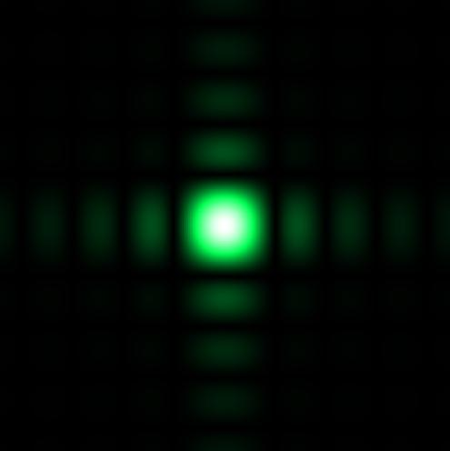
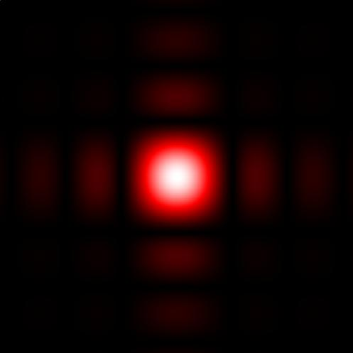
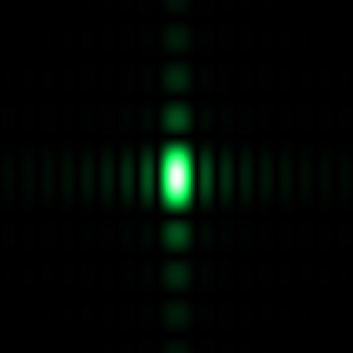
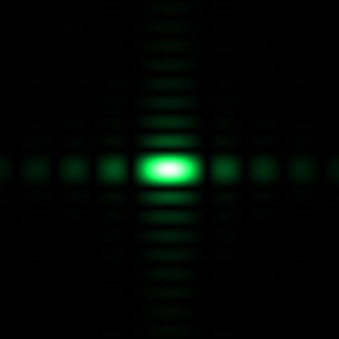

Definitions
λ = wavelength, in vacuum, of incident light
wx = width in x - direction
wy = width in y - direction
z = distance from aperture plane to observation plane

Image 1
λ = 500 nm, wx = wy = 0.200 mm, and z = 1000mm.
To download the high resolution image, copy the following link into your

Image 2
λ = 700 nm, wx = wy = 0.200 mm, and z = 1000 mm.
To download the high resolution image, copy the following link into your

Image 3
λ = 500 nm, wx = 0.200 mm, wy = 0.400 mm, and z = 1000 mm.
To download the high resolution image, copy the following link into your

Image 4
λ = 500 nm, wx = 0.200 mm, wy-width = 0.400 mm, and z = 1000 mm.
To download the high resolution image, copy the following link into your